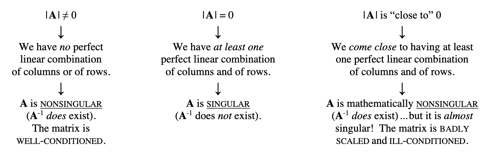
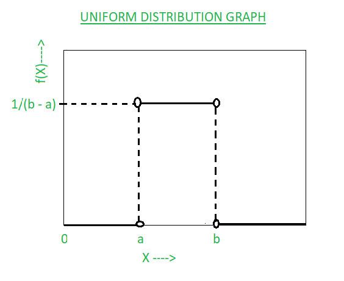
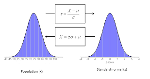

ICPSR - Math For Social Science (workshop)
![]()
Preface
These are notes from the ICPSR workshop, “Math for Social Science” with Prof. Sara Tomek. The purpose of this workshop was to review mathematical concepts already taught. Much of the information in here is taken from the lectures and handouts provided.
Day 1
Day 1 mostly consisted of a basic review of Matrix algebra.
Matrix Addition and Subtraction
Matrices must have the same dimensions to be added or subtracted.
- This means they must have the same rows x columns.
Matrix Multiplication
TK (Just add a cheat sheet for how to do these)
Day 2
Determinant
The determinant is a scalar number that comprises information on the matrix. The information it comprises tells us whether we can take the inverse of the matrix. If the determinant of a matrix is zero, then we cannot take the inverse of that matrix. In a sense, the determinant “summaries” the information in the matrix. A specific type of information from a matrix. It is easier to talk about a single number than the whole data.
Determinants measure the factor of how much the area of a given region increases or decreases in space.
how much does the transformation stretch or squish “things”.
the determinant tells us the factor of how much a given area stretches or squishes.
- in 3 dimensions this tells us the factor of change in volume
If the determinant is zero, it is squishes all of space onto a line or single point. Since then, the area of any region would be zero.
Determinants are non-zero if the matrix has full rank
only a square matrix can have a determinant.

If an inverse is badly scaled or ill-conditioned, then the inverse is unstable. This means a tiny change in just one of the elements of the original matrix can result in HUGE changes in many (or all) of the elements of its inverse.
Knowing how it is calculated isn’t super important. You can just google this if needed. Our computers can do this all as it gets much more tedious when we increase the # of dimensions.
You can compute a negative determinant (pre absolute value). This would tell you orientation and that the space has been inverted. If you still take the absolute value of the determinant, that still gives you the factor in which the space changed.
Identity Matrix
A square matrix, I, with ones on the main diagonal and zeros everywhere else.
If the size of I is not specified, then it is assumed to be conformable and as big as necessary.
The identity matrix is analogous to the number 1.
If you multiple any matrix with a conformable identity matrix, the result will be the same matrix (or vector).
Inverse Matrices
There is no way to divide a matrix.
we instead take the inverse of a matrix and multiply it by itself.
\(\textbf{A}^{-1}\) raising to the power of negative 1 indicates we are taking the inverse of a matrix.
We need to make sure the matrix can be inverted.
it is invertible if it is non-singluar.
The matrix times its inverse will return an identity matrix.
Determinate has to be non-zero.
- Need to have full rank for this.
Vectors
Vectors are matrices with only one row or columns.
\(x'x = \sum x^2_i\)
- This is the sum of squares.
Vectors are one variable
matrices are multiple variables.
Dot Product
For example, if A = [5, -2, 1] and B = [3, 0, 4] then A • B = (5)(3) + (-2)(0) + (1)(4) = 15 + 0 + 4 = 19 .
So the Dot Product of A and B is 19.If the dot product of two vectors is equal to zero then those two vectors are Orthogonal, which implies that the
angle between them is 90° (i.e., they are perpendicular) and they are independent of each other.orthogonal means independent.
- The dot product tells us how closely two vectors align.
Idempotent
A square matrix, P is idempotent if when multiplied by itself, yields itself. PP=P
The trace of an idempotent matrix is equal to the rank.
1 X 1 = 1 - this is idempotent
Order of Operations
Matrix multiplication is non-communicative. \(AB \neq BA\)
Matrix multiplication is associative. As long as the order stays the same. \((AB)C = A(BC)\)
Rank of Matrix
Thank rank of a matrix is the maximal number of linearly independent rows or columns.
rank = number dimensions in the output.
The columns in a matrix should be independent of each other.
How much information can we actually get out of a matrix that is independent of each other.
Max rank will be equal to the number of columns in the matrix.
Not full rank means some variables are linearly dependent on each other.
- classic example is male and female. Perhaps your matrix includes a dummy variable for male (0 = female, 1 = male). If you include another variable for female where (0 = male, 1 = female) - this is a dummy variable trap. The female variable is perfectly dependent on the male variable. They give the exact same information. The female variable is determined by the male variable.
Kind of similar to degrees of freedom.
If a square matrix is of full rank then it is nonsingular (i.e., it does have an inverse).
If a square matrix is not of full rank then it is singular (i.e., it does not have an inverse).
Trace
sum of the diagonal elements.
Let’s say we have a VCV matrix.
the variance of each element along the main diagonal represents variance for that variable.
If you were to take the trace of the main diagonal in a VCV, you would get the variance across all variables together (non-weighted).
- VCV’s are always square matrices.
Eigenvalues and Eigenvectors
Let’s say we have a matrix, A, that is square and nxn.
Eigenvectors have a special relationship with this matrix
such that when you multiply \(\textbf{A}\overrightarrow{x}\) you get \(\lambda \overrightarrow{x}\)
the \(\overrightarrow{x}\) is the eigenvector.
A is a matrix. The \(\lambda\) is an EIGENVALUE and is a SCALAR.
When you multiply A times the eigenvector x, you get back that same vector, multiplied by a scalar, lambda. These scalars are called eigenvalues.
From reddit:
“I’m not aware of how it’s used, if at all, in statistics. It comes from linear algebra.
Say you have a shape. You can apply a transformation to it - rotate it, stretch bits, squash bits, etc. If you paint an arrow on the shape, after the transformation the arrow will most likely be pointing a different direction.
But sometimes the transformation you apply conspires to make so that the arrow doesn’t change direction. Maybe it gets stretched or squished, but it still points in the same direction. From the arrow’s perspective, all you did was scale it up or down in size by some amount.
If that happens, the arrow is called an eigenvector of the transformation, and the amount it gets scaled by is its associated eigenvalue. They are properties of the transformation itself, not the shape you apply it to.”
A matrix can have multiple eigenvalues BUT no more than its number or rows/columns.
Each eigenvalue is associate with a specific eigenvector.
You can get negative eigenvalues but they are not good for us in statistics.
Definite
eigenvalues are closely related to definiteness.
Why do we care about definiteness?
It is useful for establishing if a (multivariate) function has a maximum, minimum or neither at a critical point.
- this is important for regression (OLS). We are trying to find the line that minimizes the squared difference.
We want positive definiteness.
To have positive definiteness we need our matrix to satisfy the following:
symmetric
all eigenvalues are positive
all the subdeterminants are positive
you could also just calculate the quadratic form and check its positiveness
if the quadratic form is > 0 then it is positive definiteness.
we want a positive definite matrix because it is good for interpretation.
Variance Inflation Factor (VIF)
metric that measures how much overlap we have between our independent variables.
If we created a correlation matrix we can find the VIF easily.
END DAY 2!
Day 3
Differentiation
Derivative
The instantaneous rate of change. Finding the slope of a single point. The tangent line of the curve.
How do we write a derivative?
Derivatives are represented by either:
f’(x)
\(\frac{\textit{d}}{\textit{dx}}f(x)\)
We are saying to take the derivative of x
Differentiation formulas
the derivative of a constant is 0
\(\frac{\textit{d}}{\textit{du}}c=0\)
example: \(\frac{\textit{d}}{\textit{du}}7\)
- if we take the derivative of just 7, we get zero.
The derivative of a sum is the sum of the derivatives.
- \(\frac{\textit{d}}{\textit{dt}}(t+4) = \frac{\textit{d}}{\textit{dt}}(t)+\frac{\textit{d}}{\textit{dt}}(4)=1+0=1\)
The derivative of u to a constant power (use this one a lot)
- \(\frac{\textit{d}}{\textit{du}}u^n=n*u^{n-1}du\)
- \(\frac{\textit{d}}{\textit{dx}}3x^3=3*3x^{2}=9x^2\)
The derivative of log:
\(\frac{\textit{d}}{\textit{du}}log(u)=\frac{1}{u}du\)
- \(\frac{\textit{d}}{\textit{dy}}3log(x)=3*\frac{1}{x}*\frac{\textit{d}}{\textit{dx}}x=\frac{3}{x}\)
The derivative of e:
\(\frac{\textit{d}}{\textit{du}}e^u=e^udu\)
- \(\frac{\textit{d}}{\textit{dy}}e^{4y}=e^{4y}*\frac{\textit{d}}{\textit{dy}}4y=e^{4y}*4=4^{4y}\)
There is also the Product and Quotient rules
- put those here TK.
The Chain Rule
The chain rule allows you to combine any of the differentiation rules we have already covered
first do the derivative of the outside and then do the derivative of the inside.
- \(\frac{\textit{d}}{\textit{du}}f(g(u))=f'(g(u))*g'(u)*du\)
Partial derivatives
Partial derivatives are a way to derive functions that have more than one independent variable.
Partial derivatives use a notation that is intentionally similar to that of regular derivatives. Their overall format is the same but the shorthand symbols, such as “dx,” are replaced by their stylized version of the letter d: \(\partial\). Partial derivatives should be labeled as \(\frac{\partial}{\partial x}\) or \(\frac{\partial}{\partial y}\), depending on the variable being derived.
The two derivatives should be read as “The partial derivative, with respect to x,” and “The partial derivative, with respect to y.”
When taking a partial derivative with respect to a particular variable, treat all other variables as though they are constants.
- When deriving with respect to x, treat y as a constant, and do not derive the y.
Example:
\(f(x,y)=x^2y+2x^3\)
\(f(x,y)=xy^2+x^3\)
\(\frac{\partial}{\partial x}=\frac{\partial}{\partial x}(x)y^2+\frac{\partial}{\partial x}(x^3)=y^2 +3x^2\)
take the partial derivative, with respect to x.
hold y constant.
the \(y^2+3x^2\) is the rate of change for the function.
\(\frac{\partial}{\partial y}=\frac{\partial}{\partial y}x(y^2)+\frac{\partial}{\partial y}x^3=2xy+0=2xy\)
take the partial derivative, with respect to y.
hold x constant. `
the \(2xy\) is the rate of change for the function.
Integration
The integral provides us with information about the area under the function.
The indefinite integral of a function is a function, but the definite integral may be a number.
Example:
the integral of the rate of function is the distance function
integrating over a specified time tells us how far we’ve gone.
Two forms of integration:
indefinite (anti-derivative)
\(\int f(x)dx\)
- integrate the whole thing.
When doing an indefinite integral, we must add a constant to our function
definite
\(\int_{a}^{b}f(x)dx\)
notice the integral sign (the a and b). These serve as limits and tell us what values to integrate over.
the integration is going over a lower end to a positive end.
TK TK TK TK MORE ON INTEGRALS HERE + FORMULAS
Calculus in Statistics
We use calculus in many ways, some include:
continuous density functions
finding the expected value (mean) of a distribution
finding the variance (standard deviation) of a distribution
finding the median of a distribution
Probability Density Function (pdf)
The probability density function of a variable tells us the probability of a certain event when a continuum of events is possible.
The pdf of x is usually noted by the lowercase, f, i.e. f(x).
The probability of events at a particular point.
The area under a probability density function is 1.
the integral of the pdf over all events is 1.
think about what this looks like.
- if you were to shade in the pdf, you would color the whole thing!
Cumulative Density Function (cdf)
The cdf measures the area under the pdf.
- cdf is the integral of the pdf.
denoted with a capital F, i.e. F(x)
END DAY 3!
Day 4
Continuous Probability Distributions
Continuous random variables can take on an infinite number of possible values, corresponding to every value in an interval.
values where the curve is high = higher probability of occurring.
we model a continuous random variable with a curve f(x), called a probability density function (pdf).
f(x) represents the height of the curve at point x
for continuous random variables probabilities are areas under the curve.
The probability that a random value of x is exactly equal to one specific value is ZERO
this is because the variable is continuous.
the value can be an infinitely small value.
so we use ranges. (Pa<X<b)
- need to find area between an interval.
Total area under the curve is always 1.
What are continuous probability distributions?
they describe the probabilities of a continuous random variable’s possible values.
There a couple distributions we should know:
- Uniform, Normal (Gaussian), Standardized normal, Gamma,
Probabilities and percentiles are found by integrating the probability density function.
- Deriving the mean and variance also requires integration.
Uniform Distribution
often called the rectangular distribution.
Function of x; A, B
where X is a random variable
where A and B are the known values of the lower bound and upper bound
Represented mathematically as:
\(\frac{1}{B-A}\)
- the pdf will be the function above. Elsewhere it will be 0.
How the Uniform Distribution looks:

Uniform Distribution (visual)
Normal Distribution (Gaussian)
Most important continuous probability distribution in the entire field of statistics
Approximately describes many phenomena that occur in nature, industry, and research. For example, physical measurements in areas such as meteorological experiments, rainfall studies, and measurements of manufactured parts.
This distribution is our assumption in regression
- we assume normal distribution.
Bell-shaped.
The highest probability of events to occur will happen around the mean.
- farther from the mean = less probability of event occurring.
Mean = median = mode
The beauty of the normal curve:
No matter what \(\mu\) and \(\sigma\) are, the area between \(\mu-\sigma\) and \(\mu+\sigma\) is about 68%; the area between \(\mu-2\sigma\) and \(u+2\sigma\) is about 95%; and the area between \(\mu-3\sigma\) and \(\mu+3\sigma\) is about 99.7%. Almost all values fall within 3 standard deviations.
- changing the variance simply moves away how far away that 99.7% is. Think: how spread affects the shape of the distribution and subsequently the area under the curve.
Standard Normal (Z):
similar to the normal distribution
we are just standardizing.
normal distribution can have any mean and standard deviation
the standard normal distribution has a mean of 0 and a standard deviation to 1.
makes it easier to interpret and solve
Standard normal distribution simply translates the normal distribution using z-scores.
- will give us the same area under the curve.
z-scores represent the area under the curve from a value of negative infinity to the z-score.
- if z-score is 0, then we get .5 = which means = .5 area under the curve.
Below is an image that shows the difference between the normal distribution and the standard normal.
- notice the mean and standard deviation values.

Gamma Distribution
The gamma function is only for positive values.
we are using it for only values that can be positive.
- use for something that cannot be negative (time).
Basically can get us a bunch of other distributions.
Exponential Distribution
Poisson distribution is used to compute the probability of specific numbers of events during a particular period of time or span of space.
looking across a time period or space.
count data.
just need to know lambda to define shape of distribution.
Chi-squared Distribution
A special case of the gamma distribution.
all we need to know is the degrees of freedom.
END DAY 4.
Day 5
Discrete Probability Distributions
Not continuous (duh).
have to be a whole number!
we treat these different.
count data!
We don’t have to integrate
instead of looking at a PDF, we look at a probability mass function. (PMF)
We can get a probability for an exact value!
summation instead of integration
REMEMBER: X IS NOW COUNTABLE - MUST BE A WHOLE NUMBER TO USE THESE DISTRIBUTIONS!
Discrete random variable:
- values consitute a finite or countably infinite set
Bernoulli Random Variable
any random variable whose only possible values are 0 and 1 is called a Bernoulli random variable.
binary, yes or no, right or wrong, True or False.
Each trial is independent.
What we count is called a success
- everything else is called a failure
P(success) = p
- P(failure) = 1 - p
Let X = 1 if a success occurs, and X = 0 if a failure occurs.
Then X has a Bernoulli distribution
\(P(X=x)=p^x(1-p)^{1-x}\)
- this is referred to the mass function of the Bernoulli distribution.
Why is the Bernoulli important?
some other common discrete probability distributions are built on the assumption of independent Bernoulli trials.
- Binomial, geometric, negative binomial
Geometric Random Variable
Distribution of the number of trials to get the first success in n Bernoulli trials.
Similar in the sense that it is also a specific value BUT we are interested in the count of how long it takes us to achieve a success.
Binomial Distribution
Distribution of the number of success in n independent Bernoulli Trials.
Negative Binomial
- The distribution of the number of trials to get the rth success in independent Bernoulli Trials.
Poisson Distribution
Poisson can either be continuous or discrete.
this section focuses on discrete version of poisson distribution.
Citation
@online{neilon2024,
author = {Neilon, Stone},
title = {ICPSR - {Math} {For} {Social} {Science} (Workshop)},
date = {2024-05-15},
url = {https://stoneneilon.github.io/notes/ICPSR_Math_Review/},
langid = {en}
}